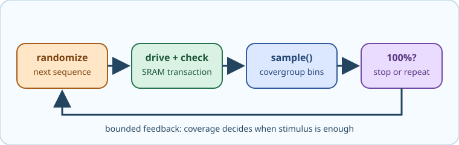

A coverage-driven test loop has this reusable shape:
task run_phase(uvm_phase phase);
phase.raise_objection(this);
while (<covergroup>.get_coverage() < 100.0 && <attempts> < <limit>) begin
<sequence>.start(<sequencer>);
end
phase.drop_objection(this);
endtask
Random stimulus without a stopping condition is unpredictable - you may run far more cycles than needed, or stop before all bins are hit. Coverage-driven verification closes this loop:

┌─────────────────────────────────────────────────┐
│ while coverage < 100% │
│ generate random sequence │
│ drive SRAM -> check scoreboard -> sample cov │
│ log current coverage % │
└─────────────────────────────────────────────────┘
coverage == 100% -> done
Query progress using get_coverage() on the covergroup object:
env.cov.mem_cg.get_coverage() // returns 0.0 to 100.0
The loop condition has two jobs: stop when every required bin is hit, and stop after a finite number of attempts if a bin is unreachable. raise_objection() keeps the UVM test alive while sequences run; drop_objection() releases the phase when the target or guard ends the loop.
Open mem_test.sv. Replace the single seq.start() call with a while loop that keeps creating and running sequences until mem_cg coverage reaches 100%. Log the current coverage after each sequence run.
Always add a maximum-iteration guard in case a coverage bin is unreachable with the current constraints. If the limit fires, find which bin has zero hits and adjust the constraints or stimulus so that range can be generated.
To continue learning UVM, the UVM Course wiki covers the full UVM methodology in depth, including advanced sequencer arbitration, factory overrides, and the register layer.